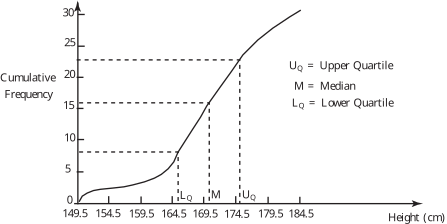

Long description: Block221_Fig3

Alt text: A cumulative frequency polygon illustrates the distribution of heights, marking the values for the lower quartile, median, and upper quartile.
This description was generated by AI and has not been verified by a human. If you spot an error, please use the feedback link below.
- The graph displays a cumulative frequency curve versus height in centimeters.
- The vertical axis represents cumulative frequency, ranging from 0 to 30.
- The horizontal axis represents height, ranging from 149.5 centimeters to 184.5 centimeters.
- The curve starts near the origin and rises steeply, indicating the frequency distribution of heights.
- Vertical dashed lines mark the positions of the lower quartile (\(\text{L}_q\)), the median (\(\text{M}\)), and the upper quartile (\(\text{U}_q\)) on the height axis.
- Corresponding horizontal dashed lines indicate the cumulative frequencies at these quartile points.
- The lower quartile (\(\text{L}_q\)) is marked where the cumulative frequency reaches approximately 5.
- The median (\(\text{M}\)) is marked where the cumulative frequency reaches 15.
- The upper quartile (\(\text{U}_q\)) is marked where the cumulative frequency reaches 20.